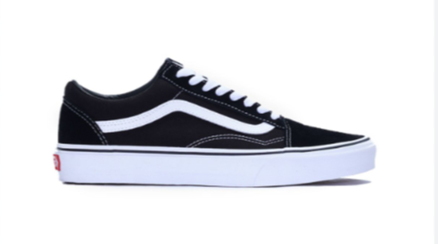
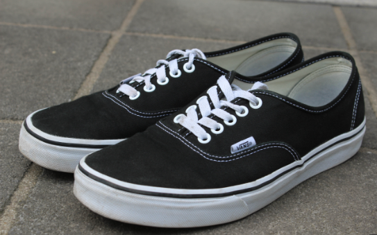
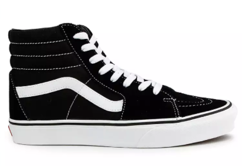
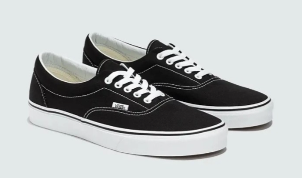

Sepatu Vans adalah merek ikonik yang dikenal dengan desain kasual dan gaya streetwear, terutama di kalangan skateboarder, BMX rider, dan komunitas musik punk rock. Didirikan pada tahun 1966 di Anaheim, California, oleh Paul Van Doren dan rekan-rekannya, Vans pertama kali dikenal melalui model "Authentic" dengan sol wafel khas yang memberikan daya cengkeram kuat. Seiring waktu, Vans meluncurkan model populer lainnya seperti Old Skool, Sk8-Hi, dan Slip-On, masing-masing dengan ciri khasnya sendiri seperti garis samping "Jazz Stripe" dan pola papan catur ikonik. Sol wafel, material berkualitas seperti kanvas dan suede, serta teknologi seperti UltraCush untuk kenyamanan tambahan adalah beberapa fitur utama yang menjadikan Vans sebagai pilihan favorit. Vans sangat mendukung komunitas skateboard dan sering berkolaborasi dengan seniman, desainer, dan band untuk menciptakan edisi terbatas yang unik. Sebagai simbol gaya hidup bebas dan kreatif, Vans telah berkembang menjadi merek global dengan toko di seluruh dunia, tetap mempertahankan esensinya sebagai pelopor dalam sepatu kasual dan streetwear. Vans terus menginspirasi budaya subkultur dengan desain timeless dan keterlibatannya dalam komunitas kreatif.
| Image | Model | Description |
|---|---|---|
|  | Vans Old Skool | Vans Old Skool adalah salah satu model paling ikonik dari Vans, pertama kali diperkenalkan pada tahun 1977. Sepatu ini adalah yang pertama kali menampilkan garis samping khas Vans, yang dikenal sebagai "Jazz Stripe." Bagian atas sepatu terbuat dari kombinasi kanvas dan suede, memberikan daya tahan ekstra. Old Skool sangat populer di kalangan skateboarder dan penggemar streetwear karena desain klasiknya yang serbaguna. |
|  | Vans Authentic | Vans Authentic adalah model pertama yang pernah dibuat oleh Vans, dirilis pada tahun 1966. Sepatu ini memiliki desain yang sederhana dengan bagian atas dari kanvas dan sol karet vulkanisir yang memberikan traksi yang baik. Authentic adalah favorit di kalangan skateboarder dan peselancar serta penggemar fashion kasual karena tampilannya yang minimalis dan klasik. |
|  | Vans Sk8-Hi | Vans Sk8-Hi adalah sepatu high-top yang pertama kali diperkenalkan pada tahun 1978. Sepatu ini dirancang untuk memberikan dukungan pergelangan kaki ekstra bagi skateboarder. Bagian atasnya terbuat dari kanvas dan suede, dengan padding di sekitar pergelangan kaki untuk kenyamanan tambahan. Sk8-Hi juga menampilkan garis samping khas Vans dan sangat populer di kalangan penggemar skateboard dan streetwear. |
|  | Vans Era | Vans Era adalah sepatu yang dirancang khusus untuk skateboarder, pertama kali diperkenalkan pada tahun 1976. Sepatu ini mirip dengan Authentic, tetapi memiliki padding tambahan di sekitar pergelangan kaki untuk kenyamanan dan dukungan ekstra. Bagian atasnya terbuat dari kanvas yang kuat, dan sol karet vulkanisir memberikan traksi yang baik. Era sering dipilih oleh skateboarder dan mereka yang mencari sepatu kasual dengan kenyamanan ekstra. |